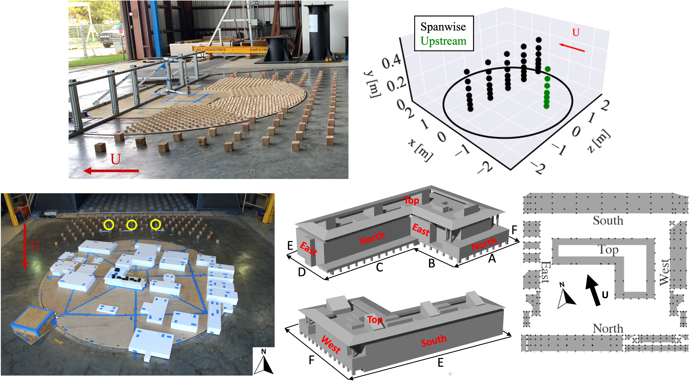

|
Themistoklis (Themis) Vargiemezis I am a Postdoctoral researcher at the Wind Engineering Lab, part of the Civil & Environmental Engineering Department of Stanford University. Prior to that, I finished my PhD from the same lab, supervised by Prof. Catherine Gorle. My research focuses on advancing the understanding and predictive modeling of wind flow in urban areas through an interdisciplinary approach that combines Computational Wind Engineering and Deep Learning. I aim to establish simulation and data-driven frameworks to improve how we design, construct and operate buildings and urban spaces, supporting the development of more sustainable and resilient cities. I'm always open to new research collaborations. If you're working on something aligned with these topics, I'd love to hear from you. Email / Google Scholar / Github / LinkedIn |
{kind=link}
News
|
Research
|

|
Themistoklis Vargiemezis, Catherine Gorle, Journal of Wind Engineering and Industrial Aerodynamics, Volume 256, January 2025, 105950 Link / Video This research proposes and validates a Large-Eddy Simulations (LES) framework for predicting wind pressures on low-rise buildings. By comparing LES results with two wind tunnel datasets for a realistic building model, we demonstrate that LES accuracy is comparable to the variability between experiments, boosting confidence in its reliability for wind load estimation. |

|
Themistoklis Vargiemezis, Catherine Gorle Journal of Wind Engineering and Industrial Aerodynamics, Volume XX, Year Link / Video This study validates Large Eddy Simulation (LES) for predicting wind-induced pressures on low-rise buildings in urban settings. Using wind tunnel data, the LES results showed great agreement across pressure statistics (mean, RMS, peak, skewness, kurtosis). The simulations also showed how surrounding buildings increase negative peak pressures by affecting local flow patterns. The work demonstrates LES as a reliable tool for evaluating wind loads in complex urban environments. |
|

|
Themistoklis Vargiemezis, Catherine Gorle NSF NHERI DESIGNSAFE Link / Dataset We investigated the pressure loads on a realistic low-rise building configuration within an urban area to study wind-induced pressure loads due to the surrounding buildings. The test case is the Y2E2 building in Stanford Engineering Quad. Experiments were performed at two wind tunnels; the NHERI Wall of Wind (WOW) wind tunnel at the Florida International University facility, and the NHERI terraformer Boundary Layer Wind Tunnel at the University of Florida (UF). The dataset is available for download below. |
Teaching
|